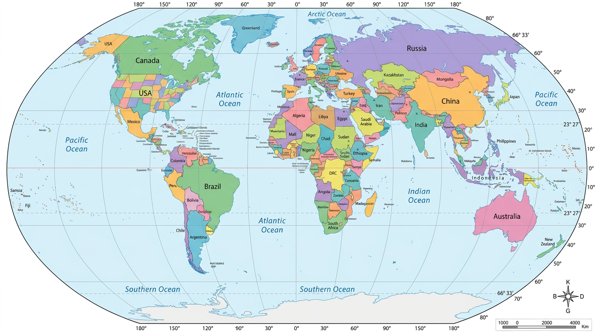

• Sorulan başkentin ait olduğu ülkeyi haritada tıklayın.
• Koordinatlar gerçek enlem/boylam sistemine göre hesaplanır.
• Basit: 2.5° tolerans (geniş alan) + 10 ülke
• Orta: 1.8° tolerans (normal) + 15 ülke
• Zor: 1.0° tolerans (dar alan) + 20 ülke
• Süre sınırsız. Doğru konuma mümkün olduğunca yakın tıklayın.